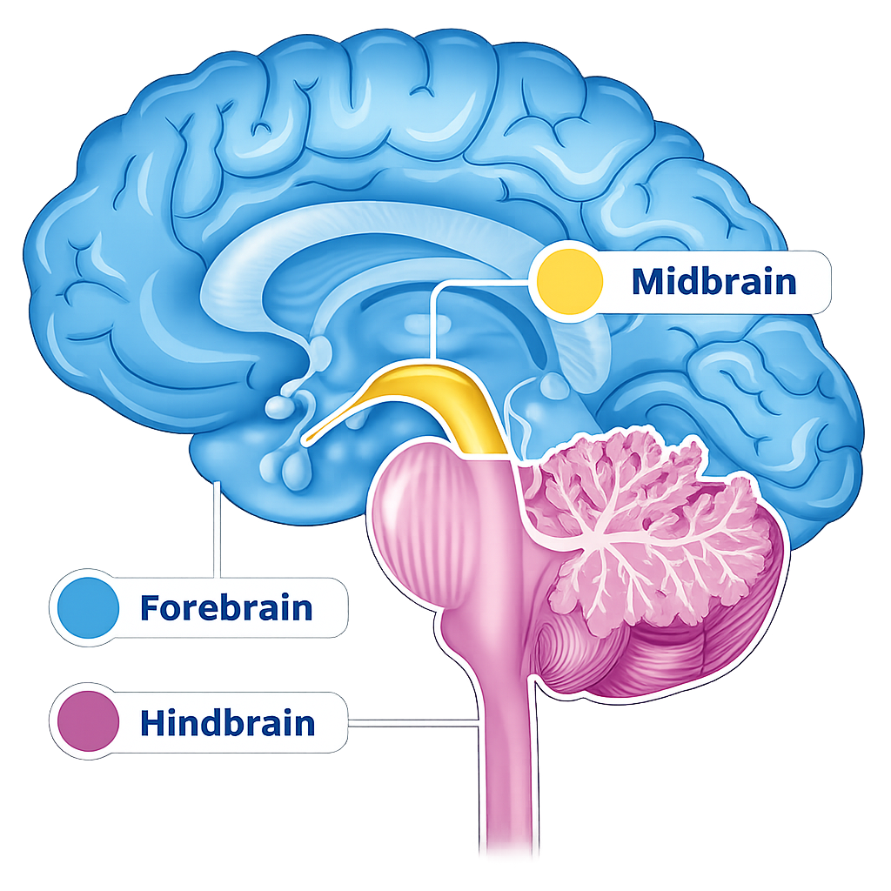

Begin the atlas
Human Brain
The brain can be introduced through three broad regions: the forebrain, midbrain, and hindbrain. Each region contains structures that contribute to perception, movement, emotion, memory, and essential body functions.
Why Neuroanatomy Matters to Me
I believe neuroanatomy is important because understanding the overall structure of a subject helps reveal how its individual parts relate to one another. Once the structure is clear, connections, interactions, and cause-and-effect relationships become easier to see.
